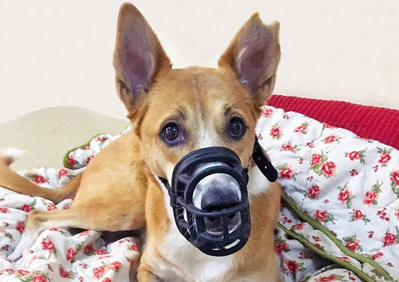

Το φίμωτρο είναι ένα χρήσιμο εργαλείο όταν χρησιμοποιείται σωστά
Photo by @lovemonsterrescue
Ένα σημαντικό ποσοστό των πελατών μας, έρχονται σε εμάς επειδή ο σκύλος τους εμφανίζει επιθετικές συμπεριφορές. Συχνά αναρωτιούνται αν ο σκύλος τους θα έπρεπε να φοράει φίμωτρο. Η απάντησή μας είναι σχεδόν πάντα, «Πολύ καλή ιδέα!». Σε κάθε περίπτωση παρ’ όλα αυτά, γίνεται μια σοβαρή συζήτηση για τους λόγους για τους οποίους οι πελάτες μας θέλουν να χρησιμοποιήσουν το φίμωτρο. Για το πότε και πώς εμφανίζονται οι επιθετικές συμπεριφορές του σκύλου και -τον πιο καταλυτικό παράγοντα- αν ο πελάτης είναι διατεθειμένος και ικανός, να αφιερώσει τον απαραίτητο χρόνο που χρειάζεται, για να αγαπήσει και εξοικειωθεί ο σκύλος με το φίμωτρο, πριν αρχίσει να το χρησιμοποιεί.
Γιατί και πώς να χρησιμοποιήσετε το φίμωτρο:
Το «γιατί» φαίνεται σχετικά προφανές: χρησιμοποιείτε το φίμωτρο για να αποτρέψετε το σκύλο σας από το να δαγκώσει κάποιον άνθρωπο ή ζώο. Προφανώς! Υπάρχουν όμως κάποιες συγκεκριμένες συνθήκες, στις οποίες το φίμωτρο είναι κατάλληλη λύση και άλλες που είναι απαγορευτικό. Ας ξεκινήσουμε με τις συνθήκες που είναι εντελώς ακατάλληλες για να βάλετε φίμωτρο στο σκύλο σας:
Πώς να ΜΗΝ χρησιμοποιήσετε το φίμωτρο στο σκύλο σας
Δεν είναι ποτέ κατάλληλη στιγμή να βάλετε φίμωτρο στο σκύλο σας, για να τον εκθέσετε σε ανεξέλεγκτες για αυτόν συνθήκες, που μπορείτε να αποφύγετε. Κάποια παραδείγματα :
-«Θα έρθουν στο σπίτι μικρά παιδιά και ο Μάφι μπορεί να τα δαγκώσει. Ας του φορέσουμε το φίμωτρο, για να διασκεδάσουν με ασφάλεια τα παιδιά χωρίς να μπορεί να τα δαγκώσει».
ΛΑΘΟΣ! Αντί αυτού, επιμεληθείτε τη σχολαστική και προσεκτική επίβλεψη τόσο του σκύλου, όσο και των παιδιών, για να κρατηθούν ασφαλείς ο ένας από τον άλλον κατά την επίσκεψη. Εναλλακτικά, μπορείτε να δώσετε το σκύλο σε κάποιο φίλο σας για την ημέρα της επίσκεψης, ή ακόμα και να τον πάτε σε κέντρο φιλοξενίας σκύλων, για πιο μακροχρόνιες επισκέψεις.
-«Η φίλη μου, θέλει να επισκεφθεί ένα πάρκο σκύλων με το σκύλο της και μας κάλεσε να πάμε μαζί της, αλλά ο Ρόκι που λατρεύει το σκύλο της φίλης μου, μπορεί να δαγκώσει τα υπόλοιπα σκυλιά που θα είναι στο πάρκο.»
ΛΑΘΟΣ! Ο Ρόκι δε γίνεται να επισκεφθεί αυτό το πάρκο σκύλων! Όχι!.
-«Ο Τσόμπερ προστατεύει το μπωλ του φαγητού του. Ας του φορέσουμε το φίμωτρο, για να του δείξουμε πως μπορούμε να αφαιρούμε το μπωλ του φαγητού όποτε θέλουμε. Πρέπει να καταλάβει ότι οι άνθρωποι είναι τα αφεντικά.» ΟΧΙ, ΠΟΤΕ!
Photo by Aditi Joshi
Πότε είναι πραγματικά μια καλή στιγμή για να χρησιμοποιήσετε το φίμωτρο
Παρακάτω, παρουσιάζονται κάποιες συνθήκες, που θα μπορούσατε ή θα έπρεπε να χρησιμοποιήσετε φίμωτρο:
-Περιπτώσεις έκτακτης ανάγκης. Όλα τα ζώα, όταν βιώνουν έντονο πόνο, μπορεί να δαγκώσουν. Αν ο σκύλος σας τραυματιστεί και πρέπει να τον μετακινήσετε ή να τον χειριστείτε, σας συμβουλεύουμε να του φορέσετε φίμωτρο. Η διαδικασία, θα είναι φυσικά πιο εύκολη και λιγότερο στρεσογόνα για όλους, μέσα σε μια ήδη στρεσογόνα κατάσταση, αν έχετε αφιερώσει χρόνο να πείσετε το σκύλο σας, ότι το φίμωτρο είναι κάτι ευχάριστο.
-Κτηνιατρικές διαδικασίες. Αν χρειαστεί να χειριστεί ή να εξετάσει το σκύλο σας ο κτηνίατρος για μια ξαφνική πάθηση, ή αν χρειαστεί να κάνει θεραπείες στο σπίτι για κάποιον τραυματισμό και υπάρχει σοβαρή πιθανότητα να δαγκώσει κατά την διάρκεια αυτών των διαδικασιών, θα χρειαστεί να φορέσει φίμωτρο για την ασφάλεια όλων.
Το φίμωτρο, θα έπρεπε να χρησιμοποιείται σε επείγουσες ή ανεπιθύμητες συνθήκες. Αν ο σκύλος σας χρειάζεται φίμωτρο για τις εξετάσεις ρουτίνας και καλλωπισμού, τότε μάλλον πρέπει να δουλέψετε με ανάπτυξη αντισταθμιστικής συμπεριφοράς, για να βοηθήσετε το κατοικίδιό σας να μάθει να αγαπάει (ή έστω να δέχεται ευχάριστα) αυτές τις διαδικασίες.
Υποσημείωση : Ενώ οι περισσότεροι κτηνίατροι χρησιμοποιούν φίμωτρα τύπου «μανίκι», καθώς αποτρέπουν τον σκύλο από το να λαχανιάζει και να μπορεί να φάει λιχουδιές, τα φίμωτρα αυτά μπορεί να γίνουν πολύ στρεσογόνα για τους σκύλους. Οι περισσότεροι κτηνίατροι θα σας επιτρέψουν να χρησιμοποιήσετε το δικό σας, καλής ποιότητας φίμωτρο.
Δημόσια ασφάλεια
Το φίμωτρο είναι ένα κατάλληλο εργαλείο, αν γνωρίζετε ότι ο σκύλος σας ίσως προσπαθήσει να δαγκώσει ένα νήπιο που θα τρέξει για να τον αγκαλιάσει, έναν καλώς εννοούμενο φίλο των σκύλων που επιμένει πως «όλα τα σκυλιά με αγαπάνε εμένα», ή ένα σκύλο χωρίς λουρί που χοροπηδάει για να χαιρετήσει.
Ακόμα και αν φοράτε λουρί στον σκύλο σας, εξακολουθείτε να είστε υπεύθυνος (και ο σκύλος σας θα βρει τον μπελά του) αν δαγκώσει κάποιον που εισβάλλει στον προσωπικό του χώρο. Φορώντας του φίμωτρο όταν βρίσκεται σε δημόσιους χώρους, εξασφαλίζετε την ασφάλεια όλων (και γλιτώνετε τον σκύλο από πιθανούς μπελάδες!). Επιπρόσθετα, τείνει να κρατάει τους ανθρώπους μακριά, καθώς υποθέτουν (συνήθως σωστά) ότι ένας σκύλος που πρέπει να φοράει φίμωτρο, προτιμάει να μην είναι πολύ κοινωνικός. Φυσικά θα χρειαστεί να προστατέψετε έντονα τον σκύλο σας από ανθρώπους και άλλους σκύλους, που θέλουν να αλληλεπιδράσουν μαζί του ακόμα και όταν φοράει φίμωτρο. Το φίμωτρο από μόνο του είναι ένα επιπλέον μέτρο ασφάλειας.
Εντός προγράμματος τροποποίησης συμπεριφοράς
Το φίμωτρο, μπορεί να είναι ένα χρήσιμο εργαλείο σε καταστάσεις, όπου βασισμένοι στην δουλειά που κάνετε για την τροποποίηση μιας συμπεριφοράς, είστε 99.9 τοις εκατό σίγουροι ότι θα πάει καλά, αλλά χρειάζεστε ένα επιπλέον μέτρο ασφάλειας. Ας υποθέσουμε ότι δουλεύετε τα ζητήματα επιθετικότητας μεταξύ των σκύλων μελών της οικογένειας, ή ότι έχετε κάνει πολλή δουλειά για την απευαισθητοποίηση της αντιδραστικής συμπεριφοράς του σκύλου σας και πιστεύετε ότι είναι έτοιμος να του επιτραπέι να αλληλεπιδράσει με άλλα σκυλιά. Ίσως στο παρελθόν ο σκύλος σας να ήταν επιθετικός λόγω φόβου προς μικρά παιδιά και έχετε δουλέψει πολύ αφοσιωμένα χρησιμοποιώντας την μέθοδο CAT (Constructional Aggression Treatment = Κατασκευαστική Θεραπεία Επιθετικότητας), για να τον πείσετε να αγαπάει τα νήπια και πιστεύετε ότι έχει έρθει η ώρα να γνωριστούν. Αυτή είναι η ιδανική στιγμή για να φορέσει ο σκύλος σας το αγαπημένο του φίμωτρο. Όχι μόνο θα εξαλειφθεί αυτή η 0.1 τοις εκατό πιθανότητα για ένα τραγικό λάθος, αλλά επίσης σας βοηθάει να χαλαρώσετε,έτσι ώστε το άγχος σας για τις πρώτες αλληλεπιδράσεις, να μην γίνει επιπρόσθετο άγχος για τον σκύλο σας. (Θυμηθείτε, το άγχος προκαλεί επιθετικότητα!)
10 Τρόποι για να μάθετε στο σκύλο σας να αγαπάει το φίμωτρο
Όλες οι καταστάσεις για τις οποίες αναρωτιέστε «αν θα μπορούσατε ή αν θα έπρεπε» να φορέσετε φίμωτρο στο σκύλο σας, βασίζονται πάνω στην υπόθεση ότι έχετε αφιερώσει τον απαραίτητο χρόνο που χρειάζεται, για να μάθετε στον σκύλο σας να αγαπά το φίμωτρο. Θα χρησιμοποιήσετε την κλασική εξαρτημένη μάθηση (classical conditioning), δημιουργώντας στο σκύλο σας μια όμορφη και χαρούμενη συσχέτιση με το φίμωτρο, κάνοντας τις εμπειρίες με το φίμωτρο όσο πιο θετικές και ευχάριστες γίνεται. Παρακάτω κάποιοι τρόποι με τους οποίους θα το καταφέρετε :
1.Προμηθευτείτε ένα εξαιρετικής ποιότητας φίμωτρο τύπου «καλάθι».
(Δείτε τα αγαπημένα μας φίμωτρα παρακάτω).
Ένα καλό φίμωτρο τέτοιου τύπου, επιτρέπει στο σκύλο να αναπνέει, να λαχανιάζει, να πίνει και να τρώει κανονικά, μειώνοντας έτσι το στρες που σχετίζεται με το φίμωτρο και προλαμβάνει την υπερθέρμανση του σκύλου. Μετρήστε το σκύλο σας, για να βρείτε το φίμωτρο που θα του εφαρμόσει τέλεια. Οι περισσότερες ιστοσελίδες που πουλάνε φίμωτρα, έχουν πίνακα μεγεθών για να σας βοηθήσουν να μετρήσετε σωστά τις διαστάσεις και να παραγγείλετε το κατάλληλο μέγεθος. Οι καλύτερες ιστοσελίδες, θα φτιάξουν το φίμωτρο κατά παραγγελία. Για επιπλέον πληροφορίες στο πως να βρείτε το σωστό φίμωτρο για το σκύλο σας, επισκεφθείτε το MuzzleUp Project.
2. Δείξτε το φίμωτρο στο σκύλο σας
Μην προσπαθήσετε καν να του φορέσετε ακόμα! Απλά κρατήστε το στο ένα χέρι και δώστε στο σκύλο σας μια νόστιμη λιχουδιά με το άλλο. Κρύψτε το φίμωτρο και το χέρι σας με τις λιχουδιές πίσω από την πλάτη σας, εμφανίστε τα ξανά και ξαναταΐστε. Επαναλάβετε αυτό το βήμα, μέχρι ο σκύλος σας να ενθουσιάζεται όταν εμφανίζετε το φίμωτρο που είχατε κρυμμένο πίσω από την πλάτη σας και να ψάχνει αμέσως για την λιχουδιά. Τώρα πλέον, ο σκύλος σας σκέφτεται ότι φίμωτρο ίσον νόστιμη λιχουδιά!
3.Ταΐστε λιχουδιές μέσα στο φίμωτρο
Μπορείτε να πιέσετε λιχουδιές (υψηλής αξίας για τον σκύλο - κάτι πολύ νόστιμο) στο μπροστινό μέρος του φίμωτρου ή να σπρώξετε κομμάτια τυριού μέσα από τα λουράκια.
Ο στόχος εδώ, είναι ο σκύλος να βάλει από μόνος του την μουσούδα του μέσα στο φίμωτρο, χωρίς να το σπρώξετε εσείς πάνω στην μύτη του. Αν απομακρύνεται όταν γίνεται αυτή η διαδικασία, μην ακολουθήσετε τον σκύλο σας με το φίμωτρο, περιμένετε να επιστρέψει πίσω σε εσάς.
4.Αυξήστε την διάρκεια
Όταν ο σκύλος σας, βάζει από μόνος του την μουσούδα του μέσα στο φίμωτρο (ιδανικά να χώνει την μύτη του μέσα), αυξήστε την διάρκεια της διαδικασίας σταδιακά, ταΐζοντας, περιμένοντας και μετά ξανά ταΐζοντας αρκετές φορές καθόλη τη διάρκεια που ο σκύλος κρατάει την μουσούδα μέσα στο φίμωτρο.
5.Παίξτε με τα λουράκια
Ενώ κρατάτε το φίμωτρο στο ένα χέρι και ταΐζετε περιστασιακά, παίξτε με τα λουράκια του φίμωτρου πίσω από το κεφάλι του σκύλου, σαν να ετοιμάζεστε να το κουμπώσετε.
6.Εξικιώστε τον σκύλο σας με τον ήχο του κουμπώματος του φίμωτρου
Αν το φίμωτρο σας έχει κούμπωμα αντί για ζώνη με αγκράφα και ο σκύλος σας ταράζεται με τον ήχο του κλεισίματος του κουμπώματος, αφιερώστε χρόνο για να εξοικειωθεί με αυτόν τον ήχο ξεχωριστά από την διαδικασία του να φορέσει το φίμωτρο. Κρατήστε το φίμωτρο σε σημείο που ο σκύλος μπορεί να το δει, κλείστε το κούμπωμα και ταΐστε λιχουδιές, μέχρι ο ήχος του κουμπώματος να κάνει το σκύλο σας να ενθουσιάζεται και να ψάχνει για την λιχουδιά.
7.Κλείστε το κούμπωμα ή δέστε την ζώνη για μικρά χρονικά διαστήματα
Αυτό το κομμάτι ίσως είναι λίγο πιο πολύπλοκο. Αρχικά, πως θα συνεχίσετε να δίνετε λιχουδιές, ενώ χρησιμοποιείτε και τα δύο σας χέρια για να δέσετε το φίμωτρο; Μπορείτε να ζητήσετε από ένα ακόμα άτομο να σας βοηθήσει ταΐζοντας λιχουδιές, ενώ εσείς ασχολείστε με τον εξοπλισμό. Αν είστε μόνοι σας, μπορείτε να απλώστε φυστικοβούτυρο ή μαλακό τυρί στην πόρτα του ψυγείου ή σε κάποια άλλη επιφάνεια, για να απασχολείται ευχάριστα ο σκύλος σας όσο εσείς δένετε το φίμωτρο. Εναλλακτικά, μπορείτε να δοκιμάσετε το Chase n’ Chomp Sticky Bone, που μπορεί να τοποθετηθεί στο πάτωμα, σε τοίχο ή στην πόρτα του ψυγείου.
8.Αφήστε το φίμωτρο στο σκύλο σας για μεγαλύτερα χρονικά διαστήματα
Σταδιακά, αφήστε το σκύλο να φοράει το φίμωτρο για περισσότερη ώρα, φροντίζοντας να παραμένει μια ευχάριστη εμπειρία για αυτόν, δίνοντας του λιχουδιές όση ώρα το φοράει. Με το πέρασμα του χρόνου, μπορείτε να μειώσετε την συχνότητα που ταΐσματος, αλλά πάντα να είστε προετοιμασμένοι να δώσετε λιχουδιές στο σκύλο σας για να τον κρατήσετε χαρούμενο.
9.Διατήρηση της θετικής συσχέτισης και ενίσχυσης του φίμωτρου
Φροντίστε να δημιουργείτε τακτικά, ευχάριστες συνθήκες κατά τη διάρκεια των οποίων ο σκύλος σας φοράει το φίμωτρο και όχι μόνο για τρομακτικές / δυσάρεστες διαδικασίες. Εφόσον έχετε μάθει στον σκύλο σας να αγαπάει το φίμωτρο, αν το φοράει μόνο για επισκέψεις στον κτηνίατρο, η συσχέτιση με το φίμωτρο θα μετατραπεί από θετική σε αρνητική και θα χρειαστεί να ξεκινήσετε από την αρχή. Ένας καλός κανόνας που μπορείτε να ακολουθείτε είναι ο εξής : δέκα ευχάριστες εμπειρίες με το φίμωτρο, για κάθε μια αρνητική και στρεσογόνα.
10.Δείτε αυτό το βίντεο
Το παραπάνω βίντεο στο Youtube από τον εξαιρετικό εκπαιδευτή Chirag Patel (Domesticated Manners, Λονδίνο, Ηνωμένο Βασίλειο), είναι τέλειο εκπαιδευτικό υλικό, για να μάθετε στο σκύλο σας να αγαπάει το φίμωτρο. Ώρα για δουλειά! Δείτε παρακάτω τα αγαπημένα μας φίμωτρα, μετρήστε το σκύλο σας, παραγγείλτε ένα και ξεκινήστε, για να πείσετε το σκύλο σας ότι το φίμωτρο είναι ό,τι καλύτερο μετά το κοτόπουλο!
Photo by Jessica Miller
Φίμωτρο Baskerville Ulta:
Το φίμωτρο Baskerville Ulta - Baskerville Ulta Muzzle, είναι ευρέως γνωστό για την ασφάλεια και την άνεση που προσφέρει. Το λαστιχένιο του υλικό μπορεί να θερμανθεί και να γίνει καλούπι για την καλύτερη εφαρμογή στο σχήμα του προσώπου του σκύλου σας.
Τα σχόλια των εκπαιδευτών μας, Kelly Fahey, PMCT2, DogSmith of Hunterdon, Pittstown, NJ:
«Το φίμωτρο Baskerville Ulta, είναι η συνήθης μου επιλογή. Επιτρέπει στο σκύλο να λαχανιάζει, να πίνει και να τρώει. Υπάρχουν και άλλα φίμωτρα τύπου «καλάθι» στο εμπόριο, αλλά δεν παρέχουν αρκετό χώρο για να μπορείς να ταΐσεις λιχουδιές ενώ δουλεύεις με το σκύλο. Άλλο ένα χαρακτηριστικό που μου αρέσει στο φίμωτρο Baskerville, είναι το έξτρα λουράκι που έχει για να συνδέεται στο κολάρο του σκύλου, για μια ακόμα πιο ασφαλή εφαρμογή.»
Jessica Miller, CPDT-KA, PMCT, CNWI, Go Pawsitive Dog Training, Clear Spring, MD:
«Το φίμωτρο Baskerville, μας έσωσε όταν το σπίτι μας πλημύρισε. Ο σκύλος μου Handel, χρειάστηκε να μεταφερθεί μέσα από ένα ποτάμι, να ανυψωθεί πάνω σε ένα φορτηγό από έναν από τους πυροσβέστες (τον οποίο προσπάθησε να δαγκώσει), να περπατήσει μέσα σε μια πλημυρισμένη πόλη γεμάτη τρομοκρατημένους ανθρώπους και παιδιά, να περιμένει σε μια εκκλησία όταν δεν μπορούσαμε να φύγουμε και να μείνει τρεις μέρες στο σπίτι της μητέρας μου, μέχρι να βρούμε ένα νέο σπίτι για να ζήσουμε. Είχα την δυνατότητα να τον ταΐζω, να πίνει νερό, ήξερα ότι δεν θα υπερθερμανθεί και ήμουν σίγουρη πως το φίμωτρο δεν θα του φύγει ή θα χαλάσει. Αν δεν είχαμε αυτό το φίμωτρο, όλες αυτές οι διαδικασίες θα ήταν απίθανο να πραγματοποιηθούν και δε θέλω να σκέφτομαι τι θα είχε συμβεί. Επιπλέον, το φίμωτρο έχει έντονο γαλάζιο χρώμα, που ξεχωρίζει πάνω στο σκούρο του τρίχωμα, ειδοποιώντας τους άγνωστους, ότι ο σκύλος χρειάζεται το χώρο του.»
Cindy Mauro, CPDT-KA, Cindy Mauro Dog Training, Northern NJ:
«Δουλεύω αρκετά με σκυλιά που χρειάζεται να φοράνε φίμωτρο. Η συνήθης μου επιλογή είναι το φίμωτρο Baskerville. Ο σκύλος μπορεί να φάει εύκολα λιχουδιές, να πιεί, να λαχανιάσει και να γαυγίσει φορώντας αυτό το φίμωτρο. Με κατάλληλη εκπαίδευση για το φίμωτρο, δεν γίνεται χαμός. «Μόνο καλά πράγματα συμβαίνουν με το φίμωτρο φορεμένο»
Φίμωτρο Bumas: Τα φίμωτρα Bumas - Bumas Muzzle, φτιάχνονται κατά παραγγελία.
Μπορείτε να το προσαρμόσετε, για να έχει λιγότερους ή περισσότερους ιμάντες (ανάλογα με την ανατομία του σκύλου σας και το επιθυμητό επίπεδο ασφάλειας που αναζητάτε) και μπορείτε να επιλέξετε το χρώμα του κάθε ιμάντα πάνω στο φίμωτρο. Τα φίμωτρα αυτά όμως, είναι αρκετά ακριβά. Αν ο σκύλος έχει συχνή ανάγκη για χρήση του φίμωτρου, ίσως και να αξίζει το χρηματικό έξοδο, αλλά δεν είναι πρακτικό για ένα σκύλο που χρειάζεται το φίμωτρο μόνο μια ή δύο φορές το χρόνο, για την επίσκεψη του στον κτηνίατρο.
Cindy Mauro: «Το φίμωτρο Bumas, είναι η κορυφαία επιλογή για σκυλιά με επίπεδη μουσούδα. Μπορείτε να το παραγγείλετε σε πολλούς χρωματικούς συνδυασμούς, κάνοντας το να φαίνεται σαν ο σκύλος, να φοράει ένα ωραίο ζευγάρι γυαλιά. Επίσης, τα χρώματα φαίνεται να είναι πιο «φιλικά» προς το σκύλο.»
Laura Dorfman, CPDT-KA, PMCT1, Kona’s Touch, Chicago, IL: «Τα φίμωτρα Bumas, προσφέρουν εξατομικευμένη κατασκευή, για εφαρμογή σε πολλά και διαφορετικά σχήματα προσώπων σκύλων και μου αρέσουν επίσης τα χρώματα.»
Copied with permission from ‘Whole Dog Journal’ for subscription information call: 800 829 9165 or visit our website at www.whole-dog-journal.com
Αρθρογράφος : Pat Miller
Μετάφραση : Δέσποινα Τρίτση
Επιμέλεια κειμένου : Ελένη Χούμη